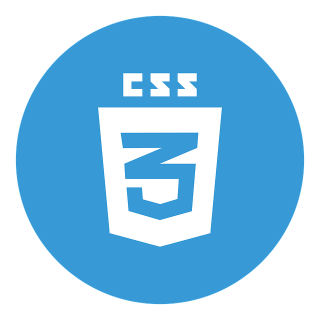
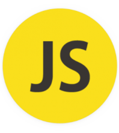
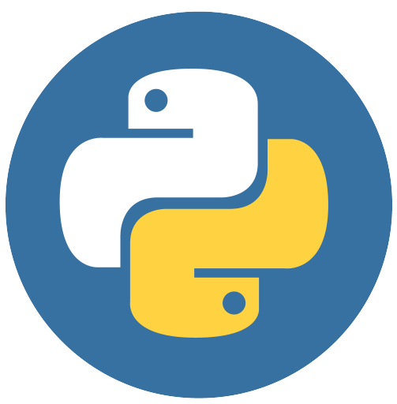
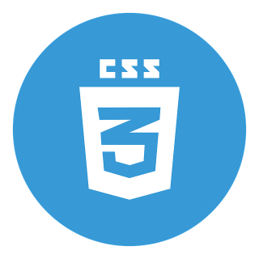
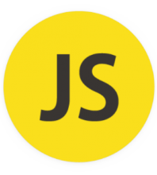
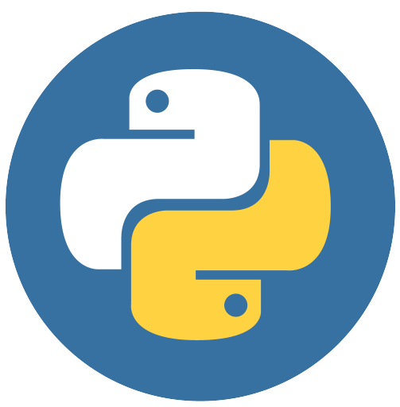

✖
SOBRE MIM
Meu primeiro contato com a tecnologia foi por meio de um tio, que me ensinou os conceitos inicias sobre manutenção e redes de computadores, e nesse periodo foi iniciado meus estudos para CCNA. Depois de alguns meses, iniciei na faculdade de engenharia de software e na minha primeira aula tive o contato com a programação, e estou até os dias atuais aprimorando meus conhecimentos na área.
LINGUAGENS
 




